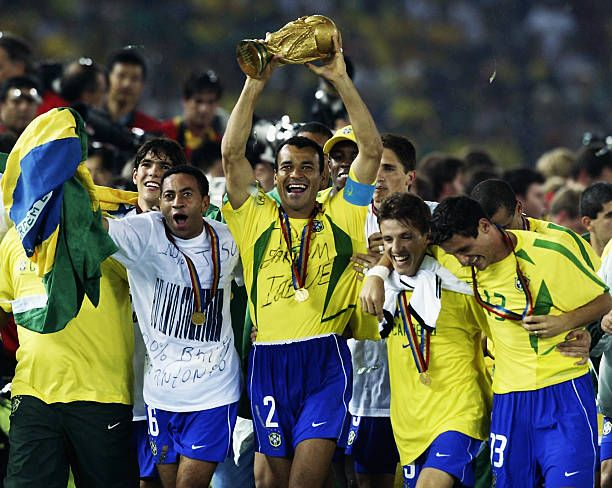

Em 30 de junho de 2002, o Brasil fez história na Copa do Mundo. A Seleção Brasileira venceu a Alemanha por 2 a 0 na grande final. Ronaldo marcou os dois gols da partida e foi um dos destaques. Com essa vitória, o Brasil conquistou o seu quinto título mundial. A torcida brasileira comemorou muito o tão esperado Penta.
Data: 30/06/2002
Autor: Maria Clara correia
Confira os principais momentos da final da Copa do Mundo de 2002.
Legenda: Brasil 2 x 0 Alemanha - Melhores Momentos(GLOBO HD 720hp) Final da Copa do Mundo Coréia & Japão 2002